# Create a dataframe with two numeric variables
df <- data.frame(x = c(1, 2, 3, 4, 5),
y = c(1, 2, 3, 4, 5))8 Basic Data Visualization
In this section, we focus on the fundamentals of data visualization in R using ggplot2. Data visualization is crucial in data analysis for understanding and communicating patterns, trends, and insights effectively.
By the end of this section, students will be able to: 1. Understand the basics of the ggplot2 package. 2. Create simple plots using ggplot2. 3. Customize plots to enhance their interpretability and aesthetic appeal.
8.1 Introduction to ggplot2
8.1.1 What is ggplot2?
ggplot2 is one of the most powerful and flexible tools for data visualization in R. Part of the tidyverse collection of packages, ggplot2 is based on the Grammar of Graphics, a framework for creating graphics in a structured and intuitive manner. With ggplot2, you can create a wide range of static and interactive plots, from simple scatter plots to complex multi-layered graphics.
8.1.2 Key Features of ggplot2
1- Layered Approach: ggplot2 uses a layering system, allowing you to add elements to a plot incrementally. Each layer can consist of data points, statistical summaries, axes, legends, and more. 2- Aesthetic Mappings: You can map variables in your data to visual properties (aesthetics) like color, size, and shape. 3- Extensible: ggplot2 can be easily extended with numerous add-on packages, making it adaptable to a wide range of visualization needs. 4- Theme System: Customize the appearance of your plots with adjustable themes.
Note
Before using ggplot2, it must be installed and loaded into your R environment. To install ggplot2, use the command install.packages("ggplot2"). To load ggplot2, use the command library(ggplot2).
Certainly! Here’s how you would format the content about basic data visualization with ggplot2 in Quarto:
8.2 Creating Simple Plots
8.2.1 Understanding the Basic Plot Structure in ggplot2
In this section, we delve into the basics of data visualization using ggplot2 in R. ggplot2 allows us to transform data into informative and compelling visual narratives, similar to how a painter brings a canvas to life.
The Three Pillars of a ggplot2 Plot:
Data: The foundation of every
ggplot2plot is your data. This is akin to the canvas for a painter, where your dataset provides the variables to be visualized.Aesthetics (
aes): Aesthetics are the visual properties that represent your data, such as color, size, and shape. Think of these as the palette of colors you choose to represent different aspects of your data.Geometries (
geom_): These are the types of plots you can create, like scatter plots, bar charts, etc. Eachgeom_function inggplot2is a different way to visually represent your data.
8.2.2 Making a Scatter Plot
Data Preparation
Consider a dataset df with two numeric variables, x and y, representing coordinates on a graph.
Plot Creation
To create a scatter plot, we use geom_point(), which plots points for each data pair in df.
# Create a scatter plot
ggplot(df, aes(x = x, y = y)) +
geom_point()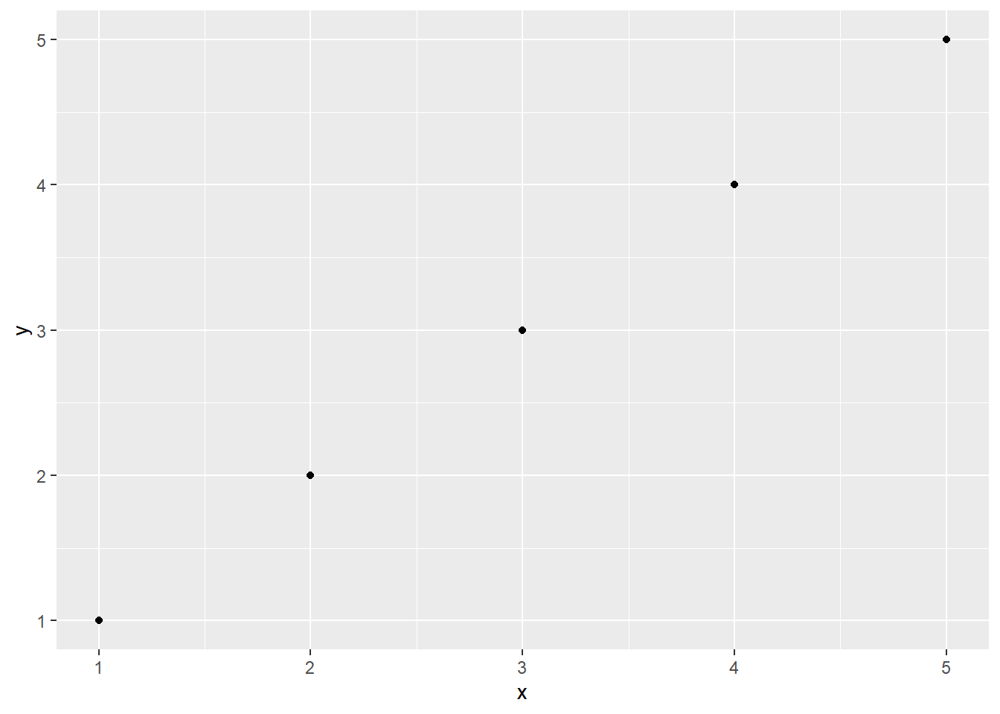
Customizing Your Plot
*Adding Titles and Labels
Adding a title and axis labels helps in providing context and making the plot informative.
ggplot(df, aes(x = x, y = y)) +
geom_point() +
labs(title = "My Scatter Plot",
x = "X Axis",
y = "Y Axis")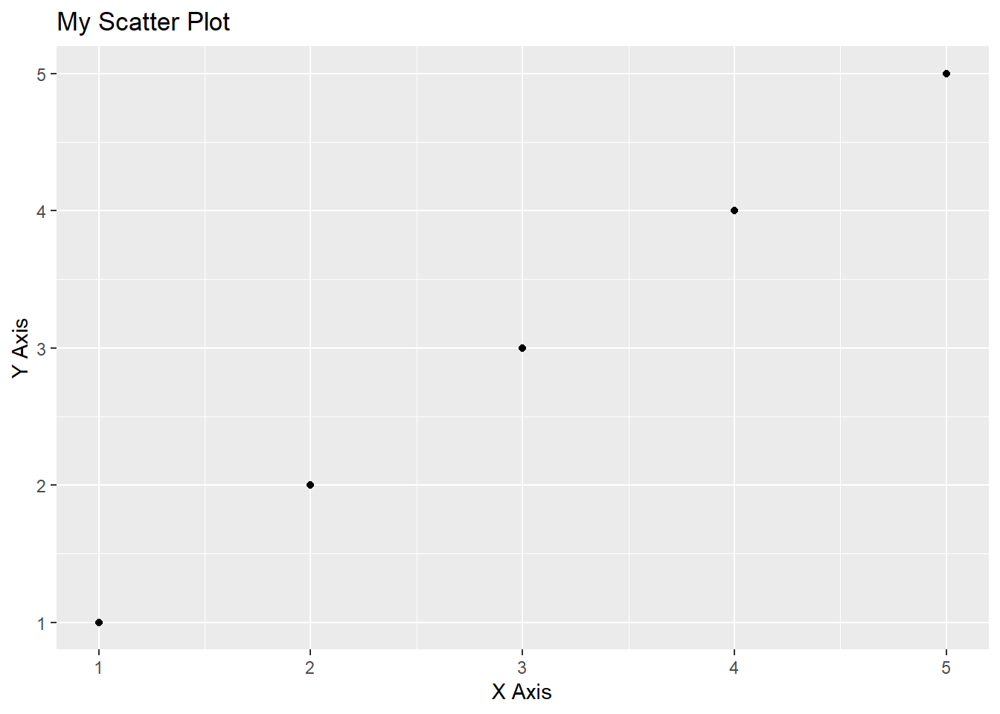
Color and Size Customizations
Modifying the color and size of points can highlight specific aspects of the data.
ggplot(df, aes(x = x, y = y)) +
geom_point(color = "red", size = 3)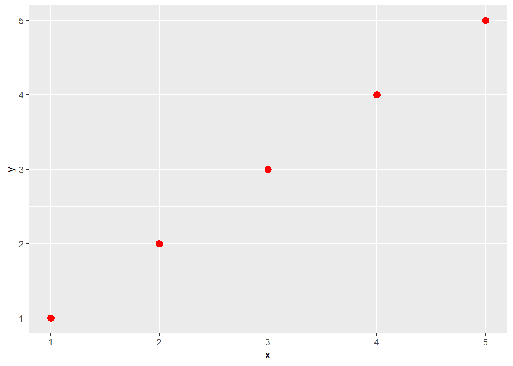
8.3 Examples of Plots types with iris dataset
8.3.1 Scatter Plot
A scatter plot is ideal for visualizing the relationship between two continuous variables. For the iris dataset, we can plot sepal length against sepal width.
ggplot(iris, aes(x = Sepal.Length, y = Sepal.Width)) +
geom_point() +
ggtitle("Scatter Plot of Sepal Dimensions") +
xlab("Sepal Length") +
ylab("Sepal Width")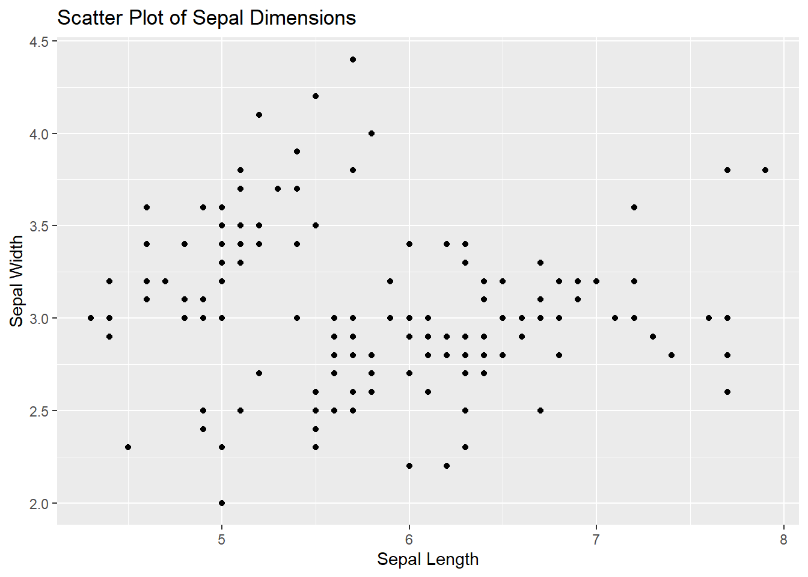
8.3.2 Line Plot
Line plots are great for showing trends over a variable, usually time. However, as the iris dataset doesn’t contain a time variable, we can use it to show how sepal length varies with sepal width for different species, using species as a grouping variable.
ggplot(iris, aes(x = Sepal.Length, y = Sepal.Width, color = Species)) +
geom_line() +
ggtitle("Line Plot of Sepal Dimensions") +
xlab("Sepal Length") +
ylab("Sepal Width")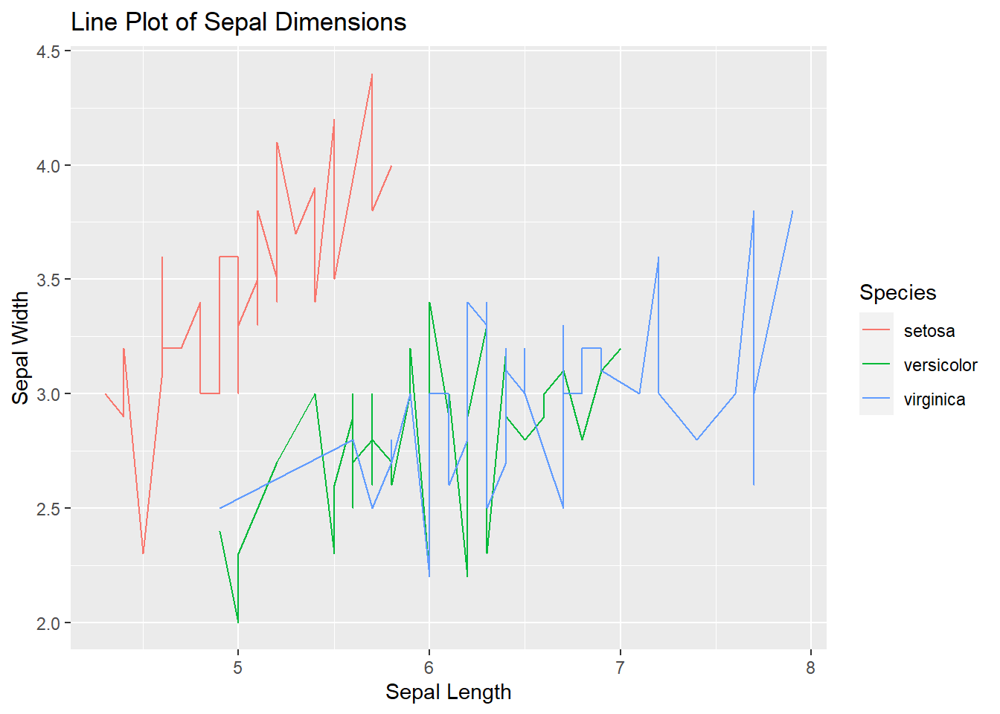
8.3.3 Bar Plot
Bar plots are used for categorical data. We can use it to show the count of iris for each species in the iris dataset.
ggplot(iris, aes(x = Species)) +
geom_bar(fill = "green", color = "black") +
ggtitle("Bar Plot of Species") +
xlab("Species") +
ylab("Count")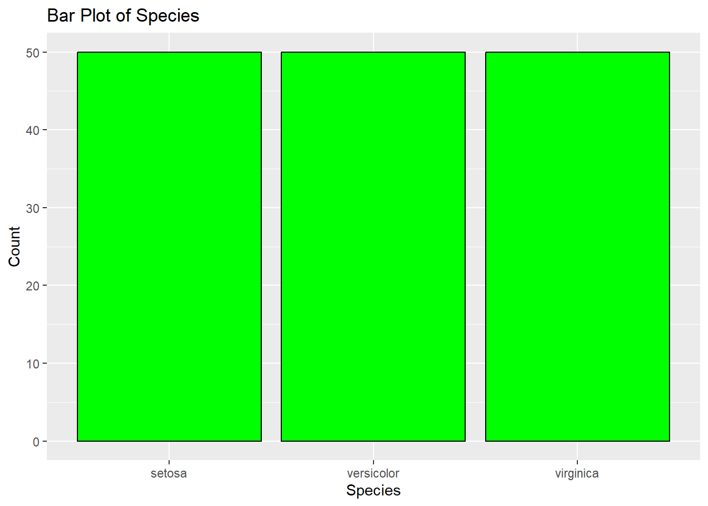
8.3.4 Histogram
Histograms are used to visualize the distribution of a single continuous variable. Let’s create a histogram for sepal length.
ggplot(iris, aes(x = Sepal.Length)) +
geom_histogram(fill = "blue", color = "black") +
ggtitle("Histogram of Sepal Length") +
xlab("Sepal Length") +
ylab("Count")`stat_bin()` using `bins = 30`. Pick better value with `binwidth`.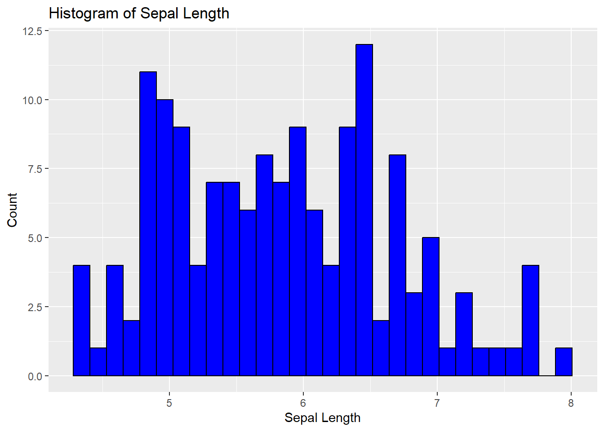
8.3.5 Boxplot
Boxplots are useful for showing the distribution of a continuous variable and detecting outliers. We can create a boxplot for sepal width across the different species.
ggplot(iris, aes(x = Species, y = Sepal.Width)) +
geom_boxplot(fill = "orange", color = "black") +
ggtitle("Boxplot of Sepal Width") +
xlab("Species") +
ylab("Sepal Width")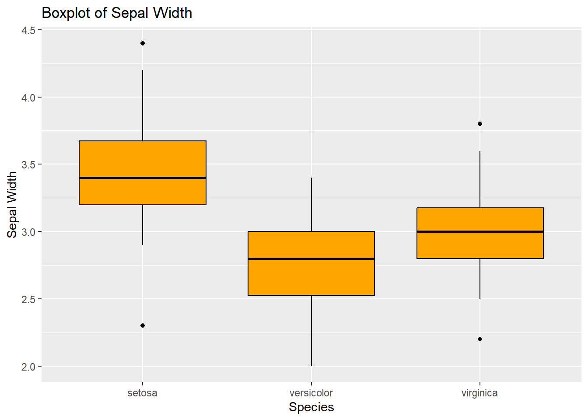
These examples illustrate the basic types of plots you can create using ggplot2 and the iris dataset. Each type of plot serves a different purpose and can provide various insights into your data. Remember, the key to effective data visualization is choosing the right type of plot for your data and the story you want to tell.
8.4 Excercise 9
Tasks
Load the ggplot2 package using the command library(ggplot2).
Explore the mtcars dataset by viewing the first few rows using head(mtcars). Understand the variables like mpg (miles per gallon), cyl (number of cylinders), hp (horsepower), etc.
Create a Scatter Plot:
- Plot mpg against hp (miles per gallon vs. horsepower).
- Use ggplot() function with aes(x = hp, y = mpg) to specify aesthetics.
- Add geom_point() to create the scatter plot.
- Optionally, add labs(title = “MPG vs Horsepower”, x = “Horsepower”, y = “Miles per Gallon”) to add labels and a title to your plot.
- Create a Box Plot:
- Create a box plot to visualize the distribution of mpg across different numbers of cyl (cylinders).
- Use ggplot() with aes(x = factor(cyl), y = mpg).
- Add geom_boxplot() to create the box plot.
- Optionally, add labels and a title as in the previous step.
- Bonus Task:
- Experiment with customizing your plots. Try changing the color of the points in the scatter plot or the fill color of the box plot. Use color or fill arguments within geom_point() or geom_boxplot()
Excercise 9: Click to see solution
library(ggplot2)head(mtcars) mpg cyl disp hp drat wt qsec vs am gear carb
Mazda RX4 21.0 6 160 110 3.90 2.620 16.46 0 1 4 4
Mazda RX4 Wag 21.0 6 160 110 3.90 2.875 17.02 0 1 4 4
Datsun 710 22.8 4 108 93 3.85 2.320 18.61 1 1 4 1
Hornet 4 Drive 21.4 6 258 110 3.08 3.215 19.44 1 0 3 1
Hornet Sportabout 18.7 8 360 175 3.15 3.440 17.02 0 0 3 2
Valiant 18.1 6 225 105 2.76 3.460 20.22 1 0 3 1ggplot(mtcars, aes(x = hp, y = mpg)) +
geom_point() +
labs(title = "MPG vs Horsepower",
x = "Horsepower",
y = "Miles per Gallon")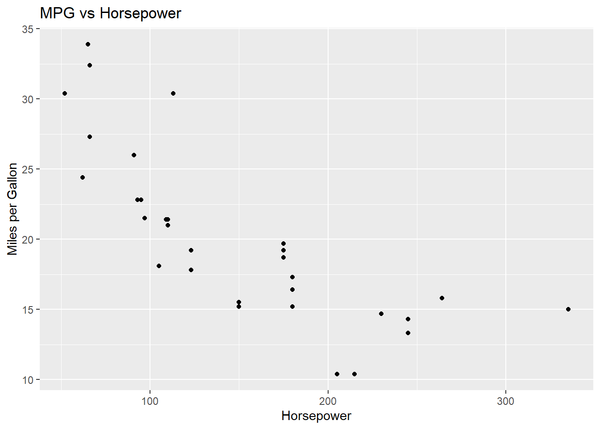
ggplot(mtcars, aes(x = factor(cyl), y = mpg)) +
geom_boxplot() +
labs(title = "MPG vs Cylinders",
x = "Cylinders",
y = "Miles per Gallon")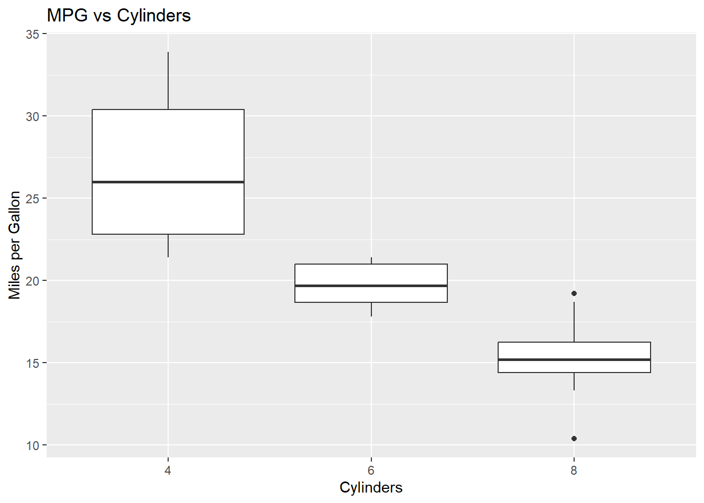
ggplot(mtcars, aes(x = hp, y = mpg)) +
geom_point(color = "red") +
labs(title = "MPG vs Horsepower",
x = "Horsepower",
y = "Miles per Gallon")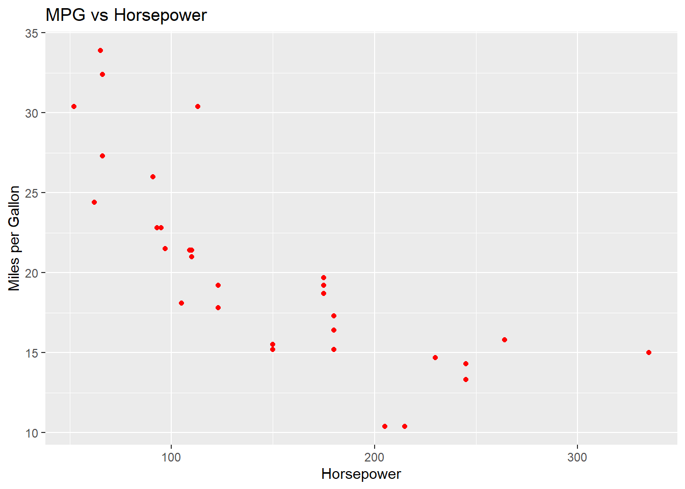
ggplot(mtcars, aes(x = factor(cyl), y = mpg, fill = factor(cyl))) +
geom_boxplot() +
labs(title = "MPG Distribution Across Cylinder Counts",
x = "Number of Cylinders",
y = "Miles per Gallon") +
scale_fill_brewer(palette = "Pastel1")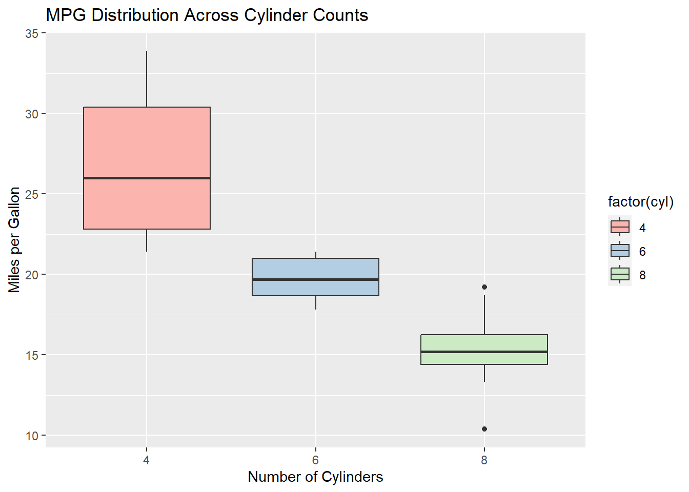